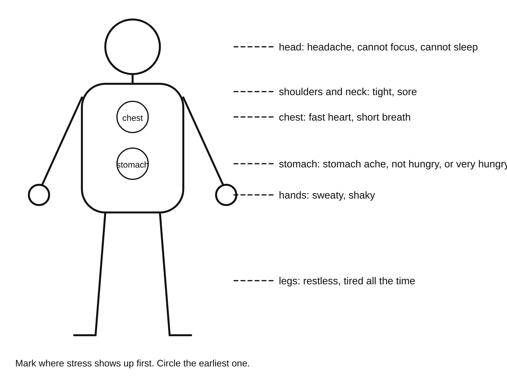

Name: ______________________________ Date: ______________ Period: ______
Directions: Parts 1 through 3 stay with you. They go in your FACS folder and nobody reads them unless you choose. I will look only to see that the grids are shaded and the stressors are tagged, not at what you wrote. The exit strip at the bottom is the only part you tear off and turn in, and it asks for categories and roles, never for what the stress is. If anything on this page makes you want to talk to someone, the list of people is in Part 4 and on the back.
Word bank in Spanish
| English | Spanish |
|---|---|
| stress | estrés |
| body | cuerpo |
| signal (a sign) | señal |
| help | ayuda |
| adult | adulto |
Part 1: What stress is
Stress means: _______________________________________________________________________________
| Good stress | Bad stress | |
|---|---|---|
| How long | short | too long |
| Pointed at | something you can do | something too big or out of your control |
| What it does | sharpens you, then leaves | wears you down, does not leave on its own |
| One example from the slide |
The alarm rule: the same alarm goes off for toast and for fire. Both times it is doing its job.
Part 2: Body signals
Mark on the outline where stress shows up for you first. Circle the earliest one.

Signals from the board (copy six): _________________________________________________________________
Signals that show in how you act (circle any): snapping at people / going quiet / cannot sit still / putting things off
My earliest signal: ______________________________________________________________________________
Part 3: The stress map (private)
When. Shade the boxes where stress shows up most. Light for a little, dark for a lot. Leave it blank if none.
| Mon | Tue | Wed | Thu | Fri | Sat | Sun | |
|---|---|---|---|---|---|---|---|
| Before school | |||||||
| During school | |||||||
| After school | |||||||
| Evening | |||||||
| Late night |
Where. Shade the same way.
| Home | School | Bus or travel | Phone | Practice or activity | Other: ______ |
|---|---|---|---|---|---|
Grade 6: fill the "when" grid only.
My stressors. List them here (a few words each). Tag each with a category letter:
S school (a book), F friends (two people), H home and family (a house), P phones and online (a phone), M money (a coin).
| Stressor (a few words) | Category letter |
|---|---|
Star the biggest one.
Grade 8 stretch (Part 5): look at the map for a pattern (same time every week, same place). Two sentences: what could change the pattern, not the feeling?
Part 4: Handle it or bring it
The kind you handle yourself with a tool (tomorrow's lesson): a test, a game, a busy week, an argument that will blow over, a Sunday night.
The kind you bring to an adult: anything that lasts for weeks; anything about safety; anything that makes you not want to be here; a friend who says any of those; anything you are not sure about.
My starred stressor is (circle): handle it / bring it
Who to ask (copy from the slide onto the back of this page too):
| Person (a role) | Where or how |
|---|---|
| The school counselor | |
| The nurse | |
| Any teacher, including me | |
| The main office | |
| An adult at home | |
| A help line the school approves |
Exit strip (tear off; turn in)
Name: ______________________________ Period: ______
3 body signals of stress: __________________________________________________________________________
2 categories of stress most common for people my age (S, F, H, P, M): ______ ______
1 adult (a role, not a name) I would bring the big kind to, and why: _________________________________________
My starred stressor is in category ______ and is (circle): handle it / bring it
Grade 6: circle the categories: S F H P M